Материнская любовь
Макия не рожала Ариэля, но она стала ему матерью. Фильм показывает, что настоящая семья создаётся не кровным родством, а ежедневной заботой, готовностью защищать и жертвовать своим комфортом.
HIBIOL · Нити воспоминаний
История о любви, времени и обещании, которое остаётся навсегда.
Начать путешествиеГлава I
О чём на самом деле эта история — о времени, любви и памяти.
«Укрась прощальное утро цветами обещания» — это не просто фэнтези о долгоживущем народе. В первую очередь это глубокая история о материнстве, времени и о том, как любовь проявляется в умении отпускать.
Макия не рожала Ариэля, но она стала ему матерью. Фильм показывает, что настоящая семья создаётся не кровным родством, а ежедневной заботой, готовностью защищать и жертвовать своим комфортом.
Макия живёт веками, а Ариэль взрослеет по законам обычного человека. Это создаёт трагический контраст: мать выглядит младше сына. Время неумолимо, и его нельзя обмануть.
Высшая форма любви — это порой умение отойти в сторону. Позволить ребёнку прожить свою жизнь, создать свою семью и совершить собственные ошибки, даже если это разбивает сердце.
В какой-то момент дети перестают нуждаться в постоянной опеке. Ариэль бунтует и ищет свой путь. Макии приходится учиться принимать его выбор и менять свою роль в его жизни.
Когда близкие уходят, с нами остаются только воспоминания. Они становятся нашим утешением и доказательством того, что встреча была неслучайной.
«Укрась прощальное утро цветами обещания» — название говорит о том, что даже в момент расставания (утро прощания) нужно оставлять что-то светлое (цветы) и хранить верность данному слову (обещание).
Наведи курсор или коснись светящихся линий, чтобы услышать шёпот истории.
Глава II
Те, чьи жизни стали частью одного обещания.
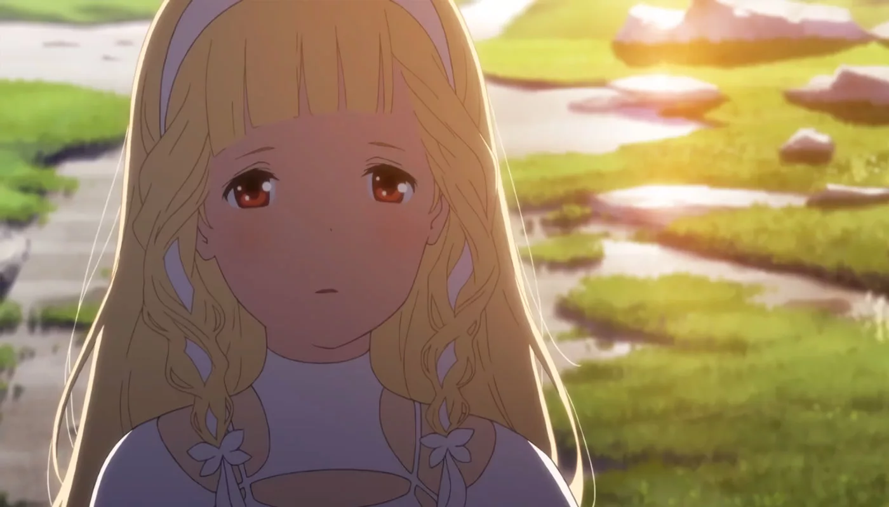
Последняя из рода Иорф
Узнать больше →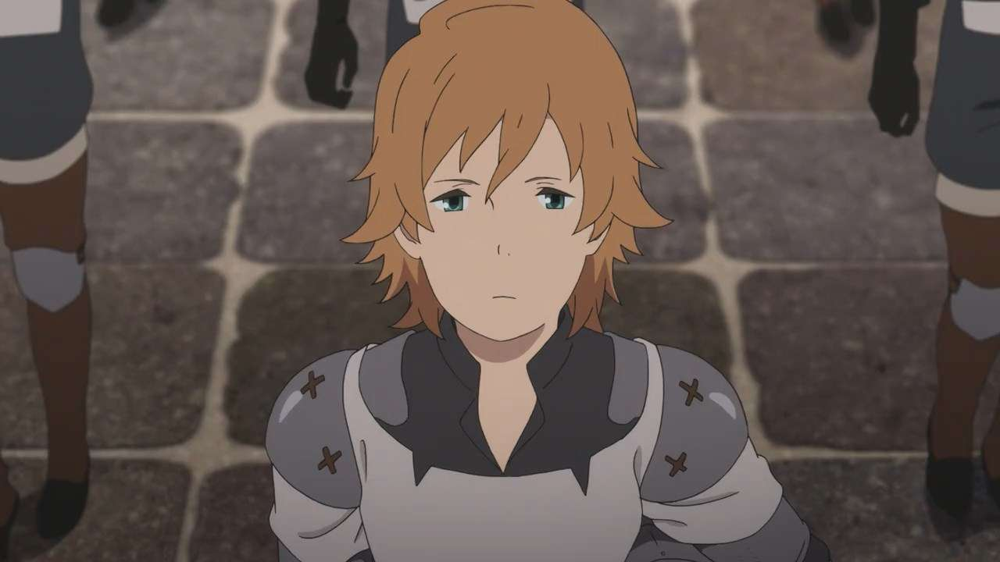
Сын, который вырос
Узнать больше →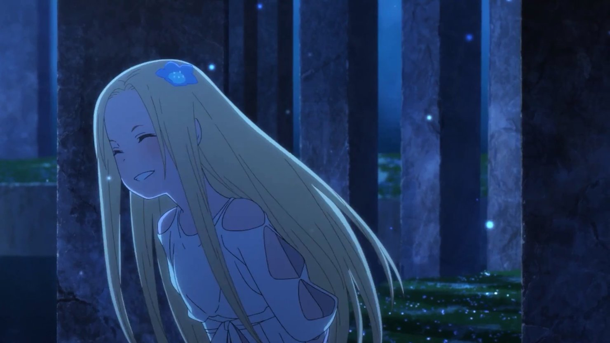
Принцесса, лишённая свободы
Узнать больше →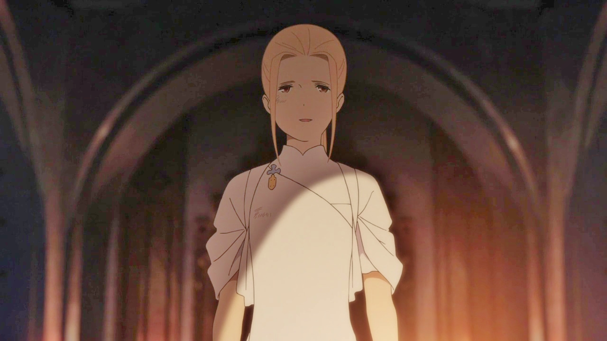
Верный друг и воин
Узнать больше →«Не каждую любовь можно сохранить такой, какой она была в начале. Иногда самое болезненное — осознать, что время изменило не только мир вокруг, но и самих людей».
Глава III
Атмосфера, которую невозможно передать словами.
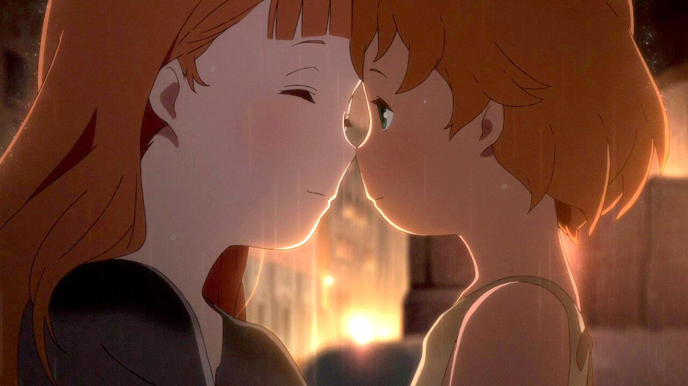
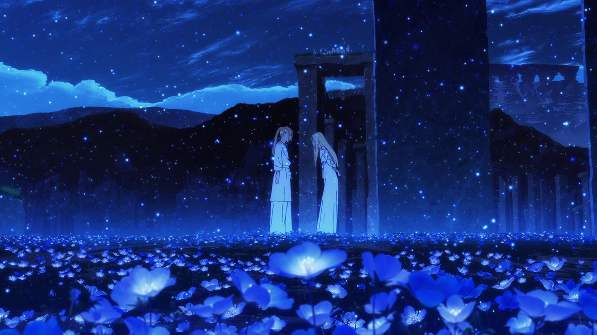
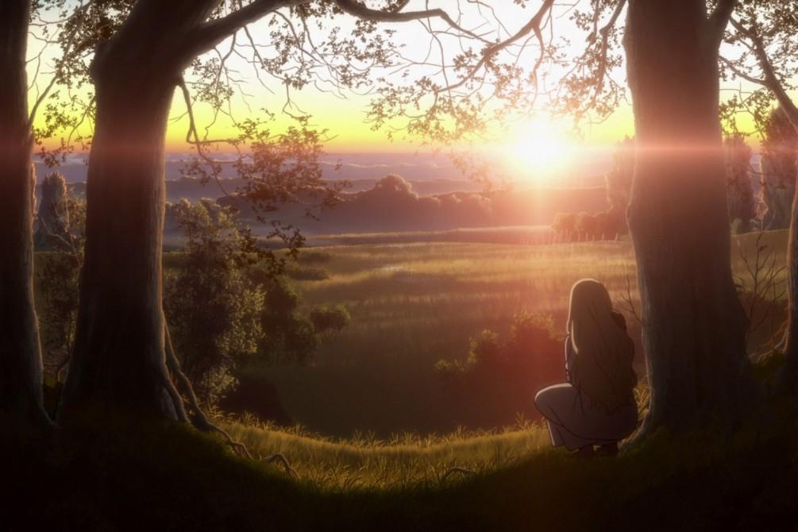
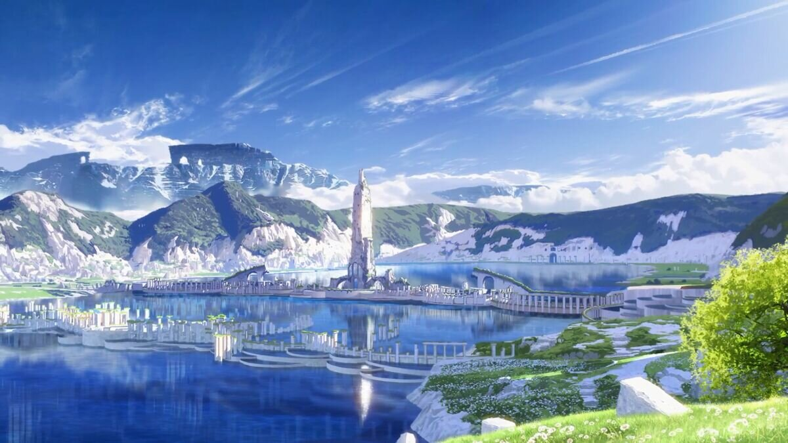
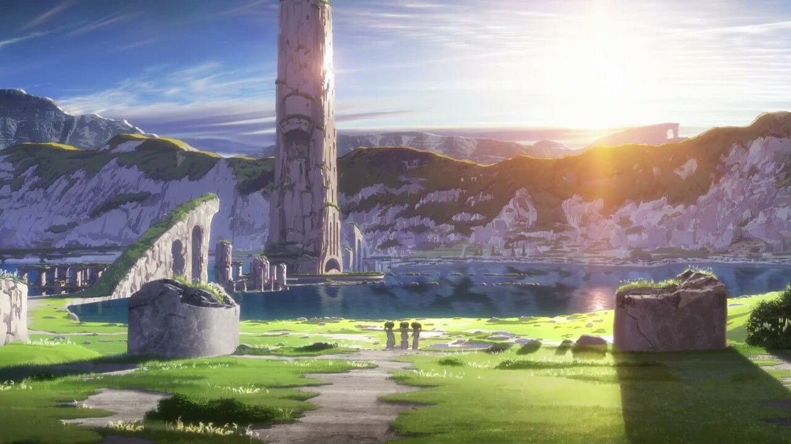
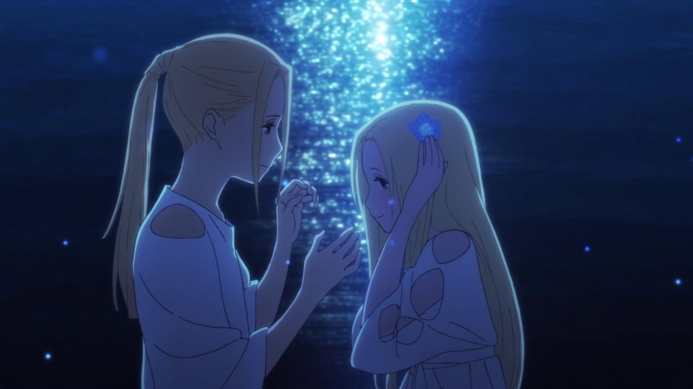
Описание
Глава IV
115 минут, которые остаются с тобой надолго.
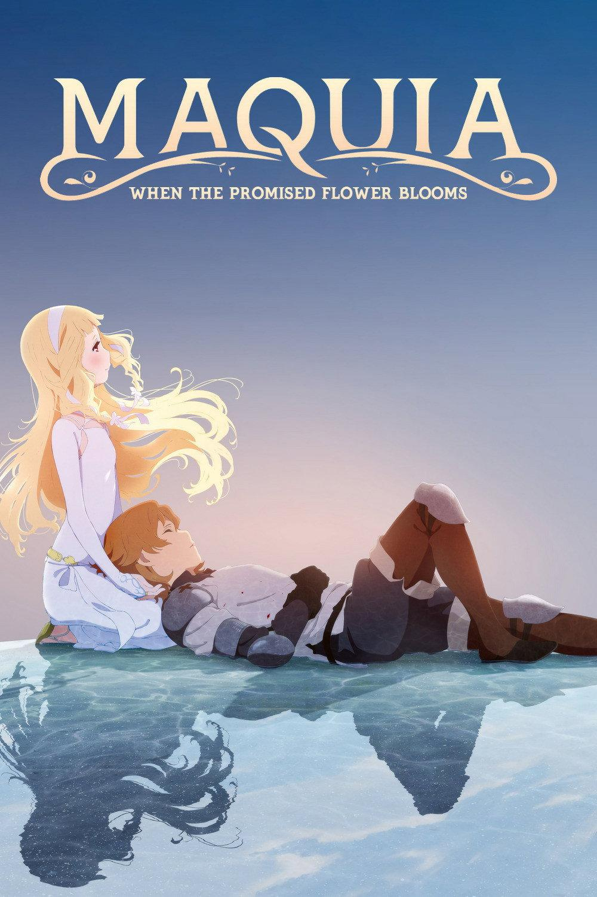
Sayonara no Asa ni Yakusoku no Hana o Kazarou
История о долгоживущей девушке Макии, которая обретает смысл жизни, решив вырастить человеческого ребёнка. Это трогательная история о материнской любви, неизбежности времени и о том, как сильно можно измениться под влиянием другого человека. Без спойлеров — просто поверьте, это стоит увидеть.
Глава V
Четыре темы, которые раскрывает фильм.
«Укрась прощальное утро цветами обещания» часто называют историей о материнстве. Но если копнуть глубже, это притча о самом человеческом существовании. О том, как мы учимся жить с потерями, как меняемся рядом с другими людьми и почему даже самые короткие встречи навсегда оставляют след в нашей душе.
Макия не просто испытывает тёплые чувства к Ариэлю. Она каждый день делает выбор в пользу ответственности. Любовь в фильме показана не через слова, а через действия: через необходимость найти еду, защитить от опасности и научить жить в мире, который не прощает слабости. Это любовь-действие, а не любовь-эмоция.
Долгожительство Макии — это не суперсила, а проклятие. Время становится главным антагонистом фильма. Мы видим, как быстротечна человеческая жизнь по сравнению с вечностью. И этот контраст заставляет нас острее почувствовать ценность каждого прожитого дня. Нельзя повернуть время вспять, можно лишь принять его ход.
Встреча Макии и Ариэля изменила их обоих. Ариэль научил Макию быть человеком в самом широком смысле этого слова — смеяться, плакать, чувствовать. А Макия дала Ариэлю корни и крылья. Даже когда они расстаются, их влияние друг на друга продолжает жить в их поступках и характерах.
Люди живут коротко. Но это не делает их жизнь бессмысленной. Напротив, именно конечность придаёт ей ценность. Фильм напоминает: неважно, сколько времени вы провели вместе. Важно то, что вы успели вложить в сердце другого человека. Память — единственное, что время не властно забрать.
Финал
Напиши обещание, мысль или послание близкому человеку.